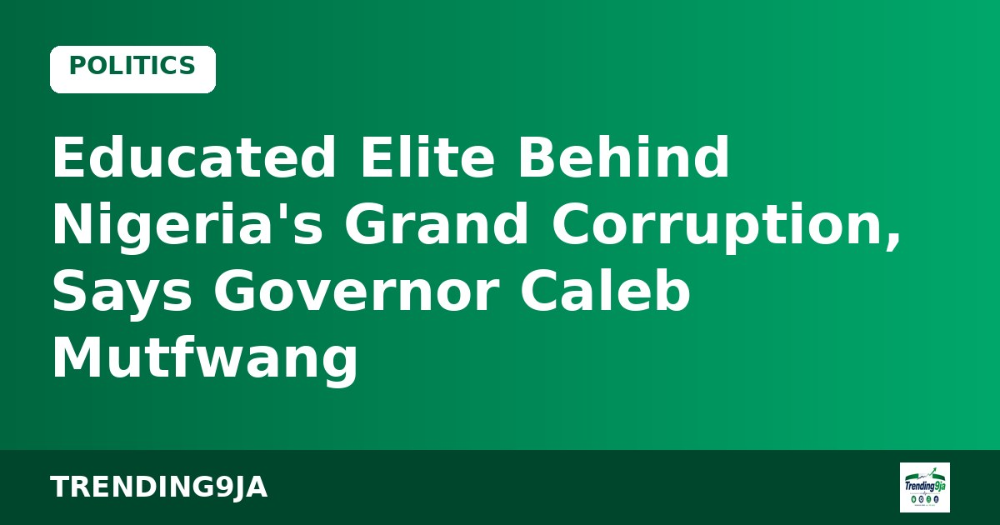

Tinubu Commends Fubara and Wike Over Rivers Peace and Infrastructure
President Bola Tinubu has commended Governor Siminalayi Fubara and FCT Minister Nyesom Wike for pursuing peace and national development.

President Bola Tinubu publicly embraced the Governor of Rivers State, Siminalayi Fubara, during an All Progressives Congress political gathering on Saturday, November 7. According to a report by Legit.ng, the President rose from his seat to meet and hug the governor in front of crowds at the campaign event in Rivers State.
The physical gesture generated immediate attention from those present at the 2027 presidential campaign rally. The moment stood out due to the widely reported political friction and ongoing tensions that have marked the relationship between both leaders over recent months.
Fubara’s administration in Rivers State has experienced significant political turbulence, including legal battles, legislative disputes, and changing political loyalties. His attendance at an APC campaign event alongside President Tinubu was considered a notable occurrence given the state's recent political history.
The rally was organized as part of the ruling party’s early mobilization efforts in preparation for the 2027 general elections. Rivers State is viewed as a vital battleground territory for any political party seeking to build a firm foothold in southern Nigeria.
Legit.ng also noted that Federal Capital Territory Minister Nyesom Wike previously spoke about Governor Fubara's political trajectory. Wike stated that because of Fubara's age, his opportunities in political life remain open even after his time in office concludes.
Sources: Legit.ng
← More Politics stories
President Bola Tinubu has commended Governor Siminalayi Fubara and FCT Minister Nyesom Wike for pursuing peace and national development.

Plateau State Governor Caleb Mutfwang has blamed educated citizens for orchestrating grand corruption, financial crimes, and institutional decay across Nigeria.

ADC vice-presidential candidate Rotimi Amaechi promises to resign if an Atiku-led government does not bring positive changes to Nigeria within its first year.
Nigeria's trending news, politics and entertainment, straight to your email.
By subscribing you agree to our Privacy Policy. Unsubscribe any time.